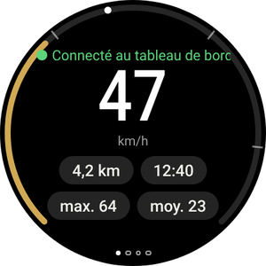
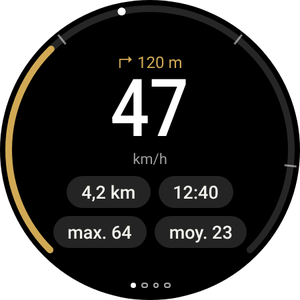
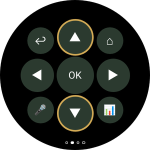
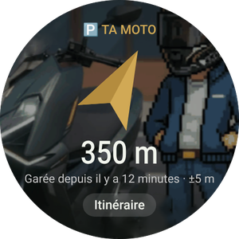
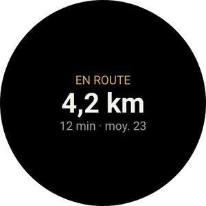
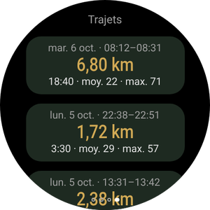
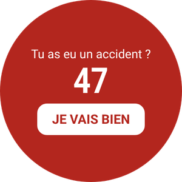
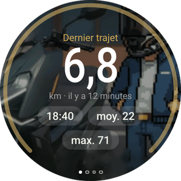
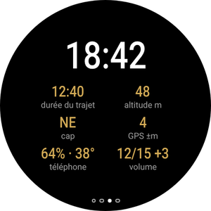

L’app Wear OS est facultative et fonctionne avec l’app du téléphone. Elle affiche ta vitesse et la prochaine manœuvre, vibre avant chaque virage, te ramène à ta moto garée et te permet de piloter Android Auto sur le tableau de bord sans toucher au téléphone.
Tu n’as pas encore l’app du téléphone ? Commence par le guide du téléphone.







Les montres ne peuvent pas ouvrir des fichiers APK comme un téléphone, donc cette première fois, tu l’installes avec une app du téléphone qui parle à la montre en Wi‑Fi (débogage sans fil). Ça a l’air technique, mais ce ne sont que quelques appuis.
Appuie sur le bouton pour télécharger directement l’APK de la montre (celui qui finit par WearOS-reloj.apk). Laisse-le dans le dossier Téléchargements.
Installe aussi une de ces apps du Play Store sur le téléphone : Wear Installer 2 ou Bugjaeger.
Télécharger l’APK de la montreGalaxy Watch : Paramètres → À propos de la montre → Informations sur le logiciel → appuie 5 fois sur Version du logiciel.
Pixel Watch et autres : Paramètres → Système → À propos → appuie 7 fois sur Numéro de build.
Un message indique que les options pour les développeurs sont activées.
Paramètres → Connexions → Wi‑Fi : mets-le sur Activé (pas Automatique) et connecte-toi au même réseau que le téléphone.
Paramètres → Options pour les développeurs → active Débogage ADB et Débogage sans fil. Ouvre Débogage sans fil → Associer un nouvel appareil.
La montre affiche un code à 6 chiffres et une adresse avec un port, par exemple 192.168.1.40:37115.
Ouvre Wear Installer 2 (ou Bugjaeger), saisis l’adresse et le code d’association, puis connecte-toi avec l’adresse affichée sur l’écran Débogage sans fil.
Choisis le fichier …-WearOS-reloj.apk dans Téléchargements et installe-le. En moins d’une minute, RideScreen AA apparaît sur la montre.
Ouvre RideScreen AA sur la montre et autorise la localisation (pour la boussole vers ta moto) et les notifications.
Tu peux maintenant désactiver le débogage sans fil et le débogage ADB : ils ne servent ni à l’utiliser ni à la mettre à jour.

Le tableau de bord Zontes n’est pas tactile. Avec la montre, tu pilotes Android Auto comme avec la molette d’une voiture : une molette pour te déplacer sur l’écran et des boutons pour sélectionner, revenir ou parler à l’Assistant.
Galaxy Watch Classic, Pixel Watch et montres à couronne rotative.
Galaxy Watch classiques (4, 5, 6, 7…) et montres à écran plat.
Glisse à gauche et à droite. Les points en bas indiquent la page où tu es.

Avec la navigation d’Android Auto, la montre vibre avant chaque manœuvre : 2 coups pour la gauche, 3 pour la droite, un long et N courts pour la sortie N d’un rond-point et deux longs pour un demi-tour.
Active-le dans l’app du téléphone : ⚙️ Paramètres → Extras de trajet → Vibrations de navigation sur la montre. C’est expérimental.
Ajoute la tuile Trajet (glisse depuis le cadran et appuie sur +) pour voir le trajet en cours ou l’endroit où tu t’es garé. La complication RideScreen · km met les km du trajet sur ton cadran.
Depuis la version 2.2, quand une nouvelle version sort : sur le téléphone, ❓ Aide → ⌚ Mettre à jour l’application de la montre → Dernière version.
Le téléphone télécharge l’app de la montre et l’envoie en Bluetooth. Ça prend quelques minutes : tu vois la progression sur le téléphone et la montre. À la fin, appuie sur Installer sur la montre.
C’est sûrement l’APK du téléphone. La montre a besoin de celui qui finit par WearOS-reloj.apk.
Le serveur de l’unité principale d’Android Auto est éteint sur le téléphone. Dans Android Auto : ⋮ → Démarrer le serveur de l'unité principale (étape 6 du guide du téléphone).
Ta montre ne permet pas à une app d’en installer une autre. Installe la nouvelle version comme la première fois (Partie 1).
Sur le téléphone, appuie sur ❓ Aide → Partager les journaux et envoie-le au groupe avec les modèles de ta montre et de ton téléphone.
RideScreen AA est gratuite et open source, basée sur OpenCfMoto d’Alexandru (zanderp). Ce n’est pas une app officielle de Zontes ni de Google. Les écrans sont indicatifs : les noms exacts des réglages peuvent varier sur ta montre. · Guide du téléphone